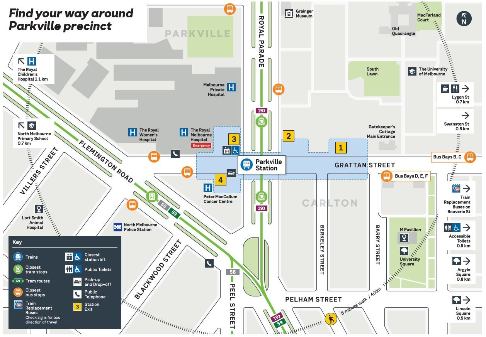

Find the Melbourne campus
Peter Mac Melbourne is located at 305 Grattan Street on Wurundjeri Woi-Wurrung Country.

Getting to Peter Mac Melbourne
Tram
Tram route 19 stops at stop 10. Routes 58 and 59 stop at stop 14.
Train
Parkville station is beside Peter Mac’s front entrance, with escalator and lift access. Use the official Journey Planner for current services.
Bus
Route 401 connects North Melbourne Station with a stop across the road from Peter Mac. Route 402 also stops near the front entrance.


Getting dropped off
Peter Mac car park drop-off
Picking up or dropping off?
FREE for pickup and drop-off on car park levels B3 and B4.
Enter the Peter Mac car park from Flemington Road. The free period applies to pickup and drop-off on B3 and B4.
Peter Mac car park drop-off
Access from Flemington Road is free for the first 30 minutes on levels B3 and B4 for pickup and drop-off.
Grattan Street
There is a five-minute drop-off zone on Grattan Street outside Peter Mac.
Taxis and rideshares
There is a taxi rank across the road at the front entrance of The Royal Melbourne Hospital.
Parking
Plan ahead
The car park reaches full occupancy daily during business hours. Parking availability can be limited. Drop-off zones are available on B3 and B4 when no other spaces are available.
Discounted car parking eligibility
Patients and carers may be eligible for discounted parking based on concession status, frequency of attendance or approval by Peter Mac Social Work.
Check the current official eligibility and collection details before travelling.
Street parking
Some time-limited street parking is available nearby. Fees apply at certain times. Check local signs before parking.
Wheelchair access
Wheelchairs are available from the car park lift lobbies for patients and carers. Please return the wheelchair to the lift lobby after use.